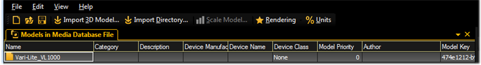
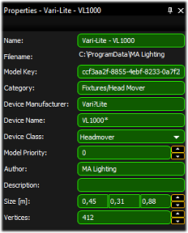
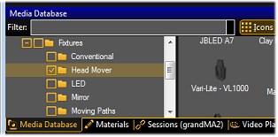

In the Media Database (View - Media Database Window) you can find all 3D objects ordered in a hierarchical structure. Types of fixtures are located in the corresponding folder. All fixtures of the type Head Mover are located in the folder "Head Mover".
Open the Import Tool
Open the import tool the menu entry ‘File – Import – Import 3D Model’.
Select ‘Import 3D Model’.
Select the 3D file ‘Vari-Lite_VL1000.3ds’ you have created.

The Import 3D Models tool
Entering 3D Model Properties
When import is done an .xml description file is generated and stored in the folder parallel to the .3ds file. For example ‘Vari-Lite_VL1000.import.xml’.
This file is only created once during the first initation of the import. The unique model key will be only generated in this step.
If the file already exists, the importer uses the data from this file to fill out the following fields:

Properties dialog
Fill out the property fields of the model.
Mandatory fields are:
Category - places the model within the hierarchic structure of models
Device Manufacturer and Name - finds the correct model in case of variant spelling
Device Class - assigns the right parameters
Model Priority - prioritization in the selection of a model. Higher numbers are more likely to be prioritized see also Assigning of 3D models to fixture types
Preview Image
Generate a significant preview image of the fixture position in the preview window.
Save the image as… (Browse to the folder of the .3ds file) parallel to your model. Use the model's name e.g., ‘Vari-Lite-VL1000.png.
Save the 3D Model
To save the 3D model as grandMA Media file, use the save function ‘File’ - ‘Save’ e.g., ‘test.gmamedia’.

Media databse with the created 3D model
The fixture is now saved in the media database in the category Fixtures/Head Mover. The image is displayed as a thumbnail.